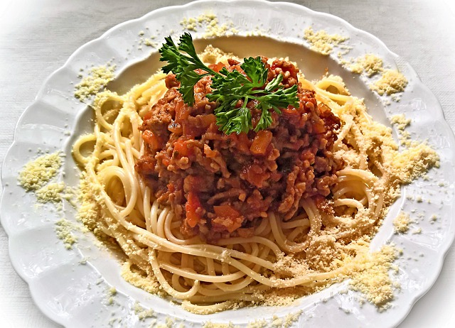

Dad's Spaghetti

Delicious Dad's Spaghetti
Enjoyable dish that here we will teach you to prepare in the same style and good taste of Italian food
Ingredients
- 1 pound spaghetti
- 2 pounds lean ground beef
- 1 onion, minced
- 1 can tomato paste
- 2 cans condensed tomato soup
- 2 1/2 cups water
Steps
- Bring a large pot of lightly salted water to a boil
- Add pasta and cook for 8 to minutes or until al dente; drain
- In a large skillet over medium heat, cook ground beef with onion until meat is brown. Drain
- Return meat mixture to pan with tomato paste, tomato soup and water. Cook stirring, until heated through and thickened, 5 to 15 minutes
- Serve over cooked pasta